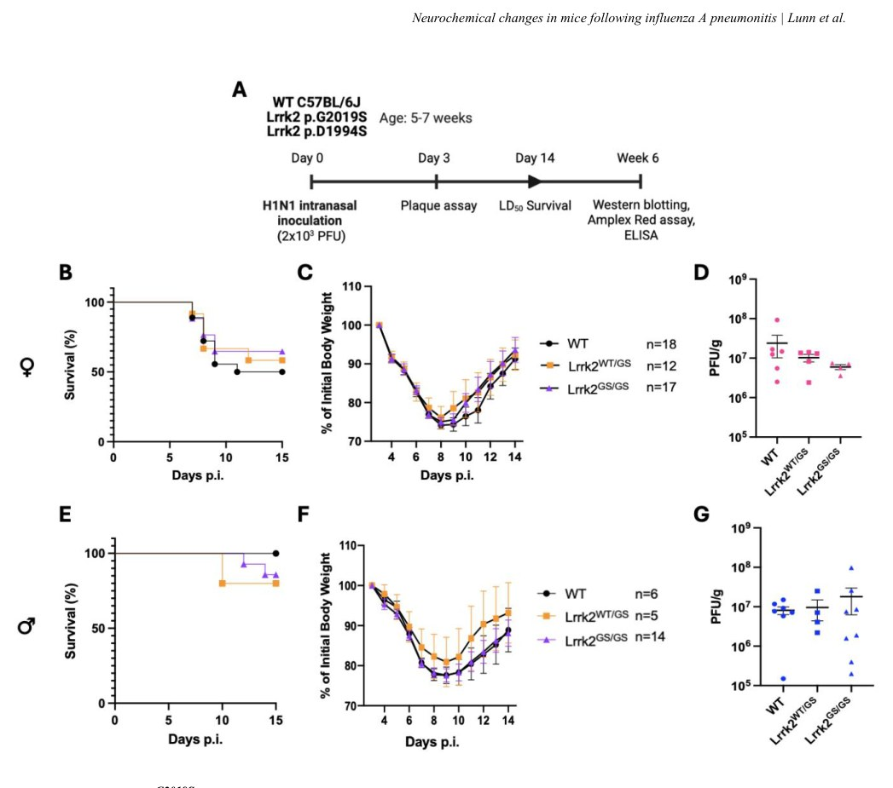
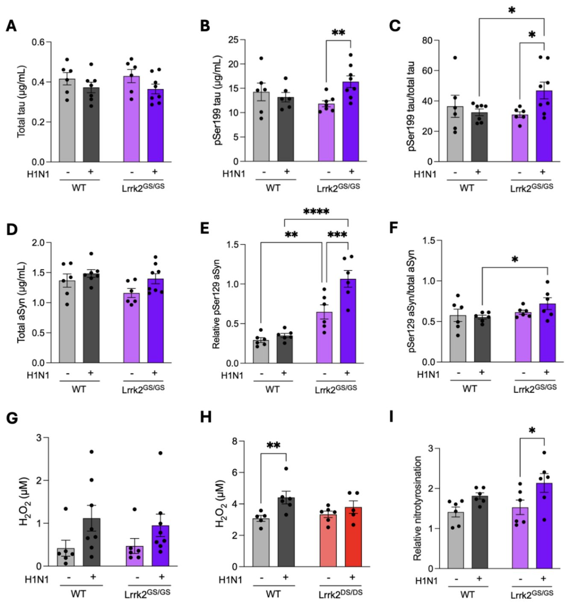

Грипп оставляет след в мозге: как мутация LRRK2 запускает белковые сдвиги
{kind=link}

Почему у одних людей с генетической предрасположенностью к болезни Паркинсона симптомы проявляются, а у других нет? Исследователи предположили, что в роли спускового крючка выступают внешние факторы вроде инфекций. Эксперимент на мышах показал, что перенесенный грипп на фоне мутации в гене LRRK2 приводит к накоплению измененных белков в тканях мозга. Это открытие помогает понять механизм избирательного развития нейродегенеративных заболеваний.
Главное
- Мутации LRRK2 не меняют тяжесть острого гриппа у мышей
- Спустя шесть недель после гриппа в мозге растет уровень pSer129 альфа-синуклеина
- Инфекция усиливает окислительный стресс и модификацию белков в мозге мутантных животных
Подробнее
Мутации в гене LRRK2 связаны с повышенным риском развития болезни Паркинсона, однако заболевание развивается далеко не у всех носителей. Ранее ученые предполагали, что для манифестации патологии необходим дополнительный внешний стимул, например вирусная инфекция. Команда исследователей проверила эту гипотезу, заразив мышей с нок-ин мутациями LRRK2 (включая вариант p.G2019S с повышенной активностью киназы) вирусом гриппа А серотипа H1N1.
Хотя острая фаза инфекции и выживаемость животных с мутациями не отличались от дикого типа, анализ спустя шесть недель выявил тревожные изменения. В головном мозге выживших мышей с гомозиготной мутацией LRRK2 p.G2019S зафиксирован рост уровней фосфорилированного альфа-синуклеина (pSer129) и тау-белка (pSer199), а также увеличение их соотношения к общему числу этих белков. Дополнительно исследователи обнаружили признаки повышенного окислительного стресса и нитротиронилирования протеома мозга.
Полученные данные демонстрируют, что перенесенная респираторная вирусная инфекция способна модулировать протеом мозга у генетически уязвимых особей. Это указывает на возможную роль периферических инфекций в запуске молекулярных каскадов, ведущих к синуклеопатиям и тауопатиям при болезни Паркинсона.
Ограничения
Работа выполнена на мышиной модели с одной конкретной вирусной нагрузкой и требует подтверждения на человеческих тканях.
Полный перевод статьи
Резюме
Воздействие вирусов гриппа повышает частоту возникновения паркинсонизма. Ранее мы и другие исследователи обнаружили, что аллельные варианты в локусе LRRK2, связанном с болезнью Паркинсона, модулируют ответы хозяина на вирулентные микробы.
Мы задались вопросом, изменяют ли мутации Lrrk2 исходы заболевания у взрослых животных после назально приобретенной легочной инфекции.
Мы инокулировали мышей линии C57BL/6J с мутантными нок-ин генотипами Lrrk2 вирусом гриппа серотипа H1N1 (1 × LD₅₀ = 2000 бляшкообразующих единиц).
Пояснение
Нок-ин (knock-in) — это метод генетической инженерии, при котором определенный ген заменяется на его мутантный аналог (в данном случае варианты Lrrk2) для изучения их эффектов в естественных условиях.
Во время индуцированной H1N1 пневмонии ни гомозиготные, ни гетерозиготные мутации Lrrk2G2019S (повышающие киназную активность) или Lrrk2D1994S (киназно-неактивные) не изменяли течение заболевания у мышей по сравнению с диким типом помета, что определялось по уровню выживаемости, вирусным титрам и изменению массы тела у обоих полов. Однако через шесть недель после инокуляции в головном мозге гомозиготных животных с Lrrk2 p.G2019S наблюдались более высокие уровни pSer129 α-синуклеина и pSer199 тау-белка по сравнению с ложноинфицированными мутантными мышами (P < 0.01). Соотношения фосфорилированного тау-белка к общему тау-белку и фосфорилированного α-синуклеина к общему α-синуклеину также возросли у мышей с Lrrk2 p.G2019S, подвергшихся воздействию H1N1 (P < 0.05). Кроме того, мы обнаружили, что нитротирозилирование протеома головного мозга было достоверно увеличено у выживших после Lrrk2G2019S по сравнению с ложноинфицированными сибсами (P < 0.05). Концентрации H₂O₂ в головном мозге были повышены у самцов дикого типа, инокулированных H1N1 (с тенденцией у самок и мышей Lrrk2G2019S) — эффект, который нивелировался у киназно-неактивных мышей Lrrk2D1994S.
Важно
У перенесших инфекцию H1N1 гомозиготных мышей Lrrk2G2019S через шесть недель обнаружены повышенные уровни pSer129 α-синуклеина, pSer199 тау-белка и маркеров окислительного стресса (P < 0.05 – P < 0.01).
Гомозиготные по мутации Lrrk2G2019S мыши, пережившие инфекцию жизнеугрожающим пневмотропным РНК-вирусом, демонстрируют изменения уровней окислительного стресса, pSer199 тау-белка и pSer129 α-синуклеина в головном мозге. Эти результаты могут иметь значение для инициации изменений, связанных с нейродегенерацией у людей, и помочь объяснить различия в частоте пенетрантности и экспрессивности мутантов LRRK2.
Осторожно
Исследование выполнено на мышиных моделях; наблюдаемые биохимические изменения требуют дальнейшей клинической валидации для оценки их применимости к патогенезу болезни Паркинсона у человека.
Введение
Болезнь Паркинсона (БП), представляющая собой сложное нейродегенеративное заболевание, неуклонно распространяется, однако ее этиология до сих пор остается до конца не выясненной. Считается, что БП возникает в результате сложного взаимодействия генетической предрасположенности, факторов окружающей среды и старения. Было выявлено несколько факторов риска внешней среды, включая ненейротропные вирусные инфекции. Например, пандемия гриппа, вызванная вариантом вируса гриппа A серотипа H1N1, сопровождалась последующим всплеском энцефалита Экономо, включая форму, связанную с постинфекционным паркинсонизмом.
Осторожно
Наблюдаемые клинические связи между вирусными инфекциями и паркинсонизмом носят преимущественно эпидемиологический характер и не доказывают прямую причинно-следственную связь у человека.
Совсем недавно было установлено, что положительный анамнез перенесенного гриппа (вплоть до пятнадцати лет назад) связан с ростом заболеваемости БП. У мышей интраназальное заражение высокопатогенным птичьим гриппом серотипа H5N1 (нейротропным вирусом) приводило к фосфорилированию и агрегации α-синуклеина, а также к гибели дофаминергических нейронов в головном мозге мышей дикого типа. Более того, было показано, что вирус H1N1 увеличивает уровень α-синуклеина ex vivo, причем этот эффект устранялся предварительным введением противогриппозного препарата.
Помимо факторов внешней среды, было выявлено более 90 локусов, вариации в которых связаны с изменением риска развития БП, включая мутации в гене LRRK2, на долю которых приходится примерно 2% случаев паркинсонизма, регистрируемых в специализированных клиниках. Мутации в этом гене повышают риск как семейных, так и спорадических форм БП, хотя механизмы этого остаются неясными. Примечательно, что для мутаций LRRK2 характерна неполная пенетрантность, в том числе для самого распространенного варианта p.G2019S.
Пояснение
Пенетрантность — это частота проявления мутантного гена в фенотипе; неполная пенетрантность означает, что носительство мутации не всегда приводит к развитию заболевания.
Это натолкнуло нас на мысль, что проявление заболевания у носителей мутаций LRRK2 может потребовать второго пускового механизма — генетического или средового; мы и другие исследователи предполагали, что последний фактор может иметь микробную природу. Важно отметить, что мутации в локусе LRRK2 также связаны с болезнью Крона, проказой и системной красной волчанкой. Каждое из этих заболеваний характеризуется хронически нарушенной регуляцией воспалительных процессов. Общий локус риска для четырех различных заболеваний ставит вопрос о том, входит ли в эволюционно сохраненную функцию LRRK2 регуляция иммунного ответа.
Ген LRRK2 экспрессируется на более высоких уровнях на периферии (например, в костном мозге, легких), чем в головном мозге, и более обильно представлен в клетках иммунной системы (нейтрофилах, моноцитах и макрофагах), чем в нейронах. Кроме того, экспрессия этого белка может усиливаться под воздействием инфекционных патогенов и воспалительных медиаторов (например, IFN-γ и NF-κB), что указывает на участие LRRK2 в защите от патогенов и реакциях иммунной системы. Ряд исследований продемонстрировал влияние LRRK2 на патогенность бактерий в зависимости от наличия микроорганизмов. Ранее мы также исследовали роль LRRK2 в ответ на вирусные инфекции; тогда мы показали, что исход заболевания после интраназального заражения реовирусом [изотип типа 3 Диринг (T3D)] у новорожденных мысят зависит от аллельных вариантов LRRK2 с учетом половой принадлежности.
Важно
В данном исследовании на взрослых мышах линии C57BL/6J оценивалось влияние вариантов LRRK2 на легочную инфекцию и последующую патологию мозга, вызванную вирусом гриппа H1N1.
В настоящей работе мы проверили, могут ли аллельные варианты LRRK2 изменить течение потенциально смертельной легочной инфекции у взрослых мышей линии C57BL/6J и выявить какие-либо патологические изменения в головном мозге после воздействия пневмотропного РНК-вируса. Мы выдвинули гипотезу, что гиперактивный по киназной функции вариант LRRK2 может снижать репликацию вируса в легких и изменять показатели выживаемости у взрослых животных. Кроме того, мы предположили, что эта инфекция может привести к изменениям нейрохимических маркеров у выживших животных. Чтобы проверить это, мы использовали адаптированный для мышей вирус гриппа A серотипа H1N1 (A/Fort Monmouth/1/1947) для индукции пневмонита у мышей дикого типа и мышей с нок-ин мутациями LRRK2. Мы установили, что ни мутация LRRK2 p.G2019S, ни p.D1994S не изменяют исход острого заболевания. Тем не менее перенесенная инфекция вирусом гриппа H1N1 приводила к повышенному уровню окислительного стресса и изменениям метаболизма α-синуклеина и тау-белка в головном мозге гомозиготных животных с мутацией LRRK2 p.G2019S по сравнению с их однопометными контрольными животными.
Результаты
Мыши Lrrk2 p.G2019S демонстрируют такое же течение заболевания, как и мыши дикого типа, при пневмоните, вызванном H1N1
Мы сначала исследовали роль усиленной киназной активности Lrrk2 в реакциях хозяина с использованием нейротропного вируса у мышей Lrrk2G2019S и однопомётников дикого типа (Рис. 1). Вирус гриппа А, серотип H1N1 (штамм FM-MA), обладает тропностью к лёгким и может вызывать фатальный пневмонит у мышей в специфических дозах. Стоит отметить, что Lrrk2 экспрессируется в высоких уровнях в лёгких. Взрослые мыши в возрасте 5–7 недель были интраназально инокулированы ранее установленной дозой LD50 (2× 10³ ПФЕ); животных либо декапитировали на 3-й день после заражения (3dpi) для анализа вирусного титра в лёгких, либо оценивали их выживаемость, после чего выживших мышей содержали до более старшего возраста (Рис. 1a). Уровни выживаемости и массу тела измеряли вплоть до 14dpi у самок (Рис. 1b, c) и самцов (Рис. 1e, f). Самки в целом демонстрировали более высокие показатели смертности, чем самцы, что согласуется с предыдущими отчётами при использовании различных штаммов H1N1 у мышей C57BL/6J. Однако мы не выявили никаких различий в выживаемости нок-ин мышей Lrrk2 p.G2019S по сравнению с однопомётниками дикого типа. Аналогично, не наблюдалось значимых различий между генотипами (и количеством мутантных аллелей) в начальной потере веса или последующем наборе веса, которые служили суррогатными маркерами заболевания и восстановления соответственно. В качестве третьего исхода инфекции H1N1 мы измерили вирусные титры в лёгких на пике инфекции, а именно на 3dpi, в отдельной когорте. Хотя мы наблюдали тенденцию к более низким титрам у гомозиготных самок Lrrk2G2019S (чего мы ожидали на основании наших результатов с реовирусом T3D у новорожденных), у соответствующих самцов наблюдалась бо́льшая вариабельность титров. В целом, не было выявлено статистически значимых различий вирусных титров на 3dpi между генотипами (Рис. 1d, g).
Важно
Нок-ин мутация Lrrk2 p.G2019S не влияет на выживаемость, динамику массы тела и вирусные титры в лёгких на 3dpi при заражении H1N1. [!tip] ПФЕ (бляшкообразующие единицы) — это мера концентрации жизнеспособного вируса, а LD50 — доза, приводящая к гибели 50% животных. [!warning] Эксперименты проводились на мышах линии C57BL/6J, и результаты могут зависеть от пола животных, поскольку самки показали более высокую смертность.
Киназная активность Lrrk2 не требуется для острого противоинфекционного ответа хозяина на инфекцию H1N1
Поскольку мы не выявили какого-либо влияния гиперактивной киназной мутации p.G2019S на выживаемость, мы затем исследовали, повлияет ли потеря активности Lrrk2 на исходы заболевания при инфекции H1N1, как это наблюдалось в ответ на реовирус-T3D у новорожденных. Используя тот же подход, что и выше, мы инокулировали мышей, несущих киназно-неактивную нок-ин мутацию Lrrk2 p.D1994S. Мы обнаружили, что как самцы, так и самки гомозиготных и гетерозиготных мышей Lrrk2D1994S демонстрировали такие же показатели выживаемости и изменения массы тела, как и мыши дикого типа после заражения H1N1 (Рис. S1a, b, d, e). Для дальнейшего изучения мы измерили вирусные титры H1N1 в лёгких этих мышей на 3dpi и вновь не выявили никаких различий между группами животных дикого типа, гетерозиготных и гомозиготных по Lrrk2 p.D1994S (Рис. S1c, f). В совокупности эти результаты позволили нам предположить, что сама киназная активность Lrrk2 не оказывает заметного влияния на ответ взрослых мышей в ходе острой фазы пневмонита, вызванного H1N1.
У выживших после H1N1 не обнаруживается экспрессия вирусных белков в головном мозге
Далее мы исследователи возможные отдаленные последствия воздействия вируса H1N1 на головной мозг у выживших мышей, а также любые эффекты, потенциально связанные с нок-ин мутацией Lrrk2G2019S. Гомозиготные мыши, пережившие инфекцию H1N1, сначала содержались в течение четырёх дополнительных недель до достижения возраста 6 недель после инфицирования (6wpi) (Рис. 1a). Затем мы исследовали гомогенаты головного мозга животных, инфицированных H1N1 и получивших ложную инокуляцию (mock), с помощью вестерн-блоттинга с использованием анти-H1N1 иммунной сыворотки кроликов. Используя инфицированное лёгкое на 3dpi в качестве положительного контроля, мы не обнаружили никаких вирусных белков H1N1, а именно нуклеопротеина NP и матриксного белка M1, в головном мозге нашей когорты выживших мышей (данные не приведены), что говорит об отсутствии детектируемых уровней H1N1 в мозге в данных условиях, как и ожидалось.
Уровень фосфорилированного тау-белка повышается в головном мозге мутантных мышей Lrrk2 p.G2019S после инфекции H1N1
Патологоанатомические исследования головного мозга, ранее выполненные в случаях постэнцефалитического паркинсонизма у жертв пандемии вируса гриппа А (H1N1), выявили признаки тауопатии. Примечательно, что наблюдаемая патология мозга в случаях болезни Паркинсона, связанных с LRRK2, вариабельна и включает характерные агрегаты α-синуклеина, патологию, связанную с фосфорилированным тау-белком, потерю нейронов без формирования включений или смешанные патологии. Поэтому мы сначала измерили количество общего тау-белка, а затем уровень фосфорилированного тау-белка (pSer199 tau) в растворимой фракции общих гомогенатов мозга с помощью ИФА (ELISA) у выживших после H1N1 мышей в сравнении с контрольными ложноинфицированными животными на 6wpi (Рис. 2a–c). При измерении общего тау в этих лизатах мы не обнаружили различий в зависимости от инфекции или мутации (Рис. 2a), а также от пола (Рис. S2a, 3a). При количественной оценке pSer199 tau двухфакторный дисперсионный анализ (ANOVA) выявил значимое взаимодействие факторов инфекции и генотипа (F(1, 23)=5.418, P=0.0291; Рис. 2b). В частности, уровень pSer199 tau был значительно повышен у инфицированных мышей Lrrk2 p.G2019S по сравнению с ложноинфицированными мутантными мышами (P=0.0099); у мышей дикого типа этот эффект отсутствовал. Затем мы рассчитали соотношение фосфорилированного тау-белка к общему тау-белку в этих образцах (Рис. 2c) и выявили значительное увеличение у инфицированных животных с мутацией Lrrk2 p.G2019S по сравнению с ложноинфицированными мутантными мышами. У инфицированных H1N1 мутантных мышей также наблюдалось значительно более высокое соотношение по сравнению с инфицированными мышами дикого типа (P<0.05; Рис. 2c). Двухфакторный ANOVA выявил тенденцию к значимости для последнего соотношения (P=0.0521). Эти данные показали, что концентрации растворимого pSer199 tau повышаются в головном мозге после инфекции H1N1, что связано с экспрессией гомозиготной нок-ин мутации Lrrk2G2019S. При исследовании тех же гомогенатов на наличие GSK3β — профильной киназы для pSer199 tau (методом вестерн-блоттинга анализировались как активная, так и неактивная формы) — результаты не выявили никаких эффектов, зависящих от инфекции, пола или мутации (данные не приведены). На сегодняшний день мы еще не исследовали другие киназы тау-белка.
{kind=link}

Важно
Инфекция H1N1 приводит к повышению уровня фосфорилированного тау-белка (pSer199 tau) в мозге мышей с нок-ин мутацией Lrrk2 p.G2019S на 6wpi (P=0.0291 для взаимодействия). [!tip] ИФА (ELISA) — это лабораторный метод количественного определения белков или других молекул с помощью антител, а двухфакторный ANOVA оценивает влияние двух независимых переменных и их взаимодействия. [!warning] Повышение уровня pSer199 tau наблюдалось только в модели на мышах с конкретной мутацией и не сопровождалось обнаружением вирусных белков в мозге, что требует осторожности при экстраполяции на патологию человека.
Фосфорилированный α-синуклеин повышается в головном мозге мутантных мышей Lrrk2 p.G2019S после заражения H1N1
Затем мы исследовали метаболизм α-синуклеина у тех же животных (Рис. 2d-f). Ранее мы наблюдали увеличение общего α-синуклеина, зависящее от Lrrk2 G2019S, в головном мозге новорожденных мышей, инфицированных реовирусом (T3D). Поэтому мы провели вестерн-блоттинг и ИФА гомогенатов цельного мозга выживших самок и самцов, определяя уровни общего синуклеина и α-синуклеина pSer129. Двухфакторный дисперсионный анализ выявил влияние предшествующей инфекции H1N1 на общий α-синуклеин в головном мозге мутантных самок (F(1, 8)=7.32, P=0.0268, Рис. SN 3d), но не у самцов (Рис. SN 2d); тем не менее, при объединении полов эффект инфекции оставался значимым (P=0.0474) (Рис. 2d).
Важно
У переболевших мутантных мышей наблюдается повышение уровня pSer129 α-синуклеина (P=0.0037), причем у самок повышенные значения отмечены даже в исходном состоянии.
Более того, мы обнаружили рост уровней α-синуклеина pSer129 у выживших животных (Рис. 2e). Двухфакторный дисперсионный анализ выявил значительный эффект генотипа (F(1, 20)=54.73, P<0.0001), значительный эффект инфекции (F(1, 20)=10.76, P=0.0037) и значительное взаимодействие генотип × инфекция (F(1, 20)=6.186, P=0.0218), которое в основном определялось самками (Рис. SN 3e). Любопытно, что у самок мышей Lrrk2 p.G2019S наблюдался повышенный уровень α-синуклеина pSer129 в головном мозге на исходном уровне (Рис. SN 3e).
Когда мы рассчитали соотношение уровней фосфорилированного α-синуклеина к общему, при попарных сравнениях мы выявили более высокое соотношение у инфицированных мутантных мышей по сравнению с инфицированными дикими животными (P<0.05) (Рис. 2f), что наблюдалось прежде всего у самцов (Рис. SN 2f); двухфакторный дисперсионный анализ показал значимость для этого взаимодействия (P=0.0381). Эти результаты навели нас на мысль, что пневмония, вызванная H1N1, может приводить к дисрегуляции растворимого фосфорилированного α-синуклеина в головном мозге выживших гомозиготных животных Lrrk2 p.G2019S.
Пояснение
Вестерн-блоттинг и ИФА — это методы лабораторной диагностики, которые позволяют количественно измерить содержание конкретных белков и их химических модификаций (например, фосфорилирования) в биологических образцах.
Учитывая, что киназа, подобная polo-2 (Plk2), была идентифицирована несколькими командами, включая нашу, как профильный фермент для фосфорилирования α-синуклеина по Ser129, мы также проверили ее наличие в лизатах мозга с помощью вестерн-блоттинга. Мы наблюдали значительное увеличение белка Plk2 в головном мозге мутантных самок на исходном уровне (P<0.05) (Рис. SN 3g), которое усугублялось предшествующей инфекцией H1N1 у диких животных; этот эффект не наблюдался при объединении полов (данные не приведены). Будущие работы определят, была ли изменена сама ферментативная активность Plk2 (или дефосфорилирование α-синуклеина pSer129) в головном мозге животных, перенесших пневмонию H1N1.
Пневмонит, вызванный вирусом H1N1, приводит к повышенному окислительному стрессу в головном мозге мышей Lrrk2 p.G2019S
Затем мы измерили уровни окислительного стресса в головном мозге выживших животных трех различных гомозиготных генотипов (Рис. 2g, h) в рамках двух сравнений когорт. Концентрацию H₂O₂ в гомогенатах головного мозга выживших мышей, инфицированных H1N1, количественно определяли с помощью анализа Amplex® Red. В ходе анализа мы выявили влияние пневмонита на уровни H₂O₂ в когорте животных дикого типа по сравнению с мутантными по Lrrk2 p.G2019S при использовании двуфакторного дисперсионного анализа (ANOVA), а именно для инфицированных самцов дикого типа по сравнению с ложнозараженными мышами (F(1, 12)=10,20, P=0,0077) (Рис. Сup. 2h); однако для других сравнений в этой когорте достоверных различий обнаружено не было (Рис. 2g). При измерении концентраций H₂O₂ в отдельной когорте, где мы сравнивали мышей дикого типа с мышами с киназно-неактивным мутантированием Lrrk2 p.D1994S, мы вновь наблюдали достоверное различие у самцов дикого типа (F(1, 18)=7,869, P=0,0117) (Рис. 2h; Рис. Сup. 1g, h). В ходе апостериорного анализа предшествующая инфекция H1N1 приводила к достоверно более высоким уровням H₂O₂ у животных дикого типа по сравнению с ложнозараженными мышами (P=0,0087); тенденция к повышению уровня H₂O₂ в головном мозге наблюдалась как у самок, так и у самцов с мутацией Lrrk2 p.G2019S в зависимости от наличия инфекции (Рис. 2g; Рис. Сup. 2h, 3h).
Важно
Инфекция H1N1 приводит к повышению уровня перекиси водорода и нитрозилирования белков в головном мозге, причем у самцов с мутацией Lrrk2 p.G2019S изменения выражены наиболее ярко, несмотря на отсутствие прямого нейротропизма вируса.
Интригующе, что у животных с киназно-неактивным мутантированием Lrrk2 p.D1994S, подвергшихся воздействию H1N1, повышения концентраций H₂O₂ в головном мозге не обнаружено (Рис. 2h; Рис. Сup. 1g, h). В качестве вторичного показателя окислительного стресса мы исследовали необратимое нитрозилирование тирозина белков в белковых экстрактах из головного мозга мышей, инфицированных H1N1, через 6 недель после инокуляции (6wpi) (Рис. 2i). Используя вестерн-блоттинг и денситометрию, мы выявили достоверное влияние воздействия H1N1 на нитрозилирование белков у всех самок (F(1, 8)=13,34, P=0,0065) (Рис. Сup. 3i). При анализе соответствующих уровней у самцов двуфакторный дисперсионный анализ выявил достоверные эффекты как для инфекции (F(1, 8)=8,484, P=0,0195), так и для генотипа (F(1, 8)=13,62, P=0,0061) (Рис. Сup. 2i). Апостериорные анализы подтвердили, что самцы с мутацией Lrrk2 p.G2019S, подвергшиеся воздействию H1N1, содержали более высокие уровни нитрозилирования тирозина по сравнению с ложнозараженными мутантными животными и инокулированными животными дикого типа.
Недавно две группы исследователей, включая нашу, установили роль Lrrk2 p.G2019S в усилении активности НАДФН-оксидазы-2 (NOX2), что приводит к всплеску продукции активных форм кислорода (АФК) определенными иммунными клетками; поэтому мы также исследовали субъединицу p47phox NOX2 в составе ее активного комплекса, который, как мы ранее обнаружили, гиперфосфорилирован под действием Lrrk2 p.G2019S в нейтрофилах. К настоящему моменту анализ тех же лизатов головного мозга от выживших после инфицирования H1N1 в сравнении с ложно инокулированными животными, исследованных выше с помощью антител против p47phox методом вестерн-блоттинга, остался неопределенным (данные не приведены). Подводя итог, мы показали, что взрослые мыши линии C57BL/6J, пережившие угрожающий жизни пневмонит вследствие вирусной инфекции нижних дыхательных путей, характеризовались нейрохимическими изменениями в головном мозге.
Пояснение
Вестерн-блоттинг — метод разделения и определения белков по массе с помощью специфических антител, а денситометрия измеряет интенсивность полученных полос на пленке или геле для оценки количества белка.
Пневмотропная инфекция H1N1 приводила к достоверному увеличению окислительного стресса и повышению уровней как фосфорилированного α-синуклеина, так и фосфорилированного тау-белка у взрослых мышей с мутацией Lrrk2 p.G2019S через 6 недель после инокуляции, то есть в то время, когда выжившие особи уже оправились от острого заболевания. Наши результаты демонстрируют, что ни мутация Lrrk2 p.G2019S, ни Lrrk2 p.D1994S не обеспечивали преимуществ и не повышали риск в ходе острого вирусного поражения легких вирусом H1N1, о чем свидетельствуют схожие показатели выживаемости, вирусные титры и изменения массы тела (Рис. 1). В наших предыдущих исследованиях мутация Lrrk2 p.G2019S обеспечивала защиту в модели сепсиса, вызванного бактериями Salmonella typhimurium, и в модели инфекции Listeria monocytogenes, но ухудшала выживаемость при энцефалите, индуцированном вирусом реовируса (T3D), с эффектом половых различий.
Эти результаты породили гипотезу, согласно которой мутант Lrrk2 p.G2019S может усиливать защиту хозяина против отдельных микробных инфекций за пределами головного мозга, но сопряжен с большим риском гибели нейронов при достижении инфекцией нервной системы (по сравнению с животными дикого типа и мышами Lrrk2 p.D1994S). Опираясь на наши предыдущие исследования, факторами, способствующими ухудшению здоровья головного мозга, являлись избыточная продукция АФК (например, за счет повышенной активности NOX2), усиление реактивности микроглии и повышенный хемотаксис миелоидных клеток в головной мозг. Поскольку вирус H1N1 не обладает прямым тропизмом к головному мозгу, мы предполагаем, что провоспалительные ответы, инициированные на периферии, достигали головного мозга и влияли на его нейрональный и/или глиальный метаболизм в описанной нами модели пневмонита — концепция, которая совпадает с выводом, к которому пришли Кадар и соавторы относительно постенцефалитического паркинсонизма после пандемии H1N1 столетней давности.
Увеличение экспрессии α-синуклеина было описано in vivo в ответ на различные воспалительные триггеры. Здесь мы обнаружили эффект мутации Lrrk2 p.G2019S на стационарный уровень α-синуклеина с фосфорилированием по серину 129 (pSer129) у самок и самцов мышей после инфекции H1N1. Следовательно, наши результаты могут иметь значение для оценки связи риска инфицирования вирусом гриппа А с последующей заболеваемостью болезнью Паркинсона с поздним началом, особенно у носителей мутантного генотипа LRRK2, у которых развивается синуклеопатия. Болезнь Паркинсона, связанная с LRRK2, проявляется плейотропной патологией головного мозга, а мутации в этом гене также связывают с тауопатией при прогрессирующем надъядерном параличе (ПНП).
Осторожно
Данные получены на мышах с генетическими модификациями в возрасте 5–7 недель, что может не полностью отражать процессы старения и хронического патогенеза у людей.
В этом контексте мы оценили влияние предшествующей инфекции H1N1 на метаболизм тау-белка. Мы выявили достоверное взаимодействие между инфекцией и генотипом в отношении стационарного уровня тау-белка с фосфорилированием по серину 199 (pSer199); при этом его уровни были достоверно повышены у самок мышей с мутацией Lrrk2 p.G2019S (но не у животных дикого типа) после инфицирования H1N1. У людей тауопатия, характеризующаяся нерастворимыми нейрофибриллярными клубочками, описана не только в случаях постинфекционного паркинсонизма, но и при подостром склерозирующем панэнцефалите, вызванном вирусом кори.
В будущих работах потребуется оценить роль периферических иммунных медиаторов, таких как циркулирующие цитокины, хемокины и инфильтрирующие иммунные клетки, в их механистический вклад в нейрохимические изменения, наблюдаемые в нашей модели пневмонита. Наше исследование имеет ограничения. Во-первых, анализ ограничивался 6 неделями после инокуляции, что может не отражать всю траекторию разрешения заболевания. Во-вторых, мы не оценивали возрастную восприимчивость, так как все мыши были относительно молодыми (5–7 недель от роду), а иммунные ответы, а также целостность гематоэнцефалического барьера, как известно, варьируют в течение жизни.
В-третьих, несколько исследований продемонстрировали, что фосфорилирование тау-белка крайне чувствительно к факторам окружающей среды и условиям стресса, таким как гипотермия, лихорадка, анестезия и цикл сон-бодрствование. В наших исследованиях мы уделяли внимание этим потенциальным модифицирующим факторам, но другие (еще не идентифицированные) могли сыграть модулирующую роль. В-четвертых, мы еще не раскрыли механизмы гиперфосфорилирования α-синуклеина и тау-белка у мышей Lrrk2 p.G2019S, переживших пневмонит, вызванный H1N1 (примечание: сам белок Lrrk2 не считается нейрональной киназой для тау-белка или α-синуклеина). В-впрочем, гиперфосфорилирование двух белков в растворимых лизатах головного мозга не эквивалентно образованию нерастворимых амилоидогенных агрегатов, связанных с формированием нейрофибриллярных клубочков и включений тельца Леви внутри нейронов на более поздних этапах жизни; тем не менее, оно может служить предшествующим событием.
Наконец, добавление большего числа животных в каждую экспериментальную группу потенциально могло бы пролить еще больше света на половые различия в наших нейрохимических показателях. Тем не менее, наши результаты показывают, что инфекция пневмотропным РНК-вирусом способна усиливать окислительный стресс в головном мозге мышей дикого типа C57BL/6J и повышать уровни фосфорилированного α-синуклеина и фосфорилированного тау-белка у нок-ин животных с мутацией Lrrk2 p.G2019S через шесть недель после назальной инокуляции, несмотря на отсутствие прямого нейротропизма у H1N1 (и отсутствие детектируемых вирусных белков в головном мозге в этот момент времени). Наши результаты на взрослых мышах, содержавшихся в контролируемых условиях, дополняют концепцию о том, что взаимодействия между отдельными вирулентными микробами, включая те, которые поражают периферические органы, и геномом хозяина могут служить инициаторами изменений в головном мозге человека, связанных с нейродегенерацией.
Методы
Мышиные колонии
Все мышиные колонии содержались на генетическом фоне C57BL/6J с использованием гетерозиготных пар для разведения. Эксперименты на животных проводились в соответствии с рекомендациями Канадского совета по уходу за животными (Canadian Councils on Animal Care) и были одобрены Комитетом по этике содержания животных Оттавского университета. Эксперименты с вирусными инфекциями проводились в специализированном виварии биологической безопасности 2-го уровня защиты. Мыши с нок-ином Lrrk2 p.G2019S (MGI:5295368) и Lrrk2 p.D1994S (MGI:5295371) были любезно предоставлены д-ром Дерья Шимшек (Dr. Derya Shimshek), как описано ранее (32). В данном исследовании использовались как самки, так и самцы мышей, в соответствии с указаниями.
Пояснение
> Нок-ин (knock-in) — это генетическая модификация, при которой в геном животного встраивают определенную мутацию (в данном случае в ген Lrrk2), чтобы изучить её влияние на развитие патологий.
Интраназальное заражение мышиным вариантом вируса гриппа A H1N1
Получение адаптированного к мышам варианта вируса гриппа A H1N1 [A/Fort Monmouth/1/1947 (‘FM-MA’)] было описано ранее (33). Взрослые мыши в возрасте 5–7 недель подвергались анестезии 3% изофлураном в кислороде (O₂) при скорости потока 1 л/мин в течение 1 минуты. Доза в 2× 10³ бляшкообразующих единиц (БОЕ) FM-MA H1N1 (приготовленная в 50 мкл PBS) вводилась в носовые ходы, что вызывало тяжелый пневмонит с летальностью около 50% (1 LD₅₀). За мышами наблюдали в течение 14 дней после инокуляции (dpi) и взвешивали дважды в день с 4 по 14 dpi. Критерии прекращения эксперимента (показания к эвтаназии) включали морибундное состояние, затрудненное дыхание или потерю массы тела ≥ 30%. Мыши, пережившие острую вирусную инфекцию (что подтверждалось выживанием на 14 dpi), содержались в течение еще 4 недель до общего срока 6 недель после инокуляции (wpi) (Рис. 1a). Параллельно с мышами, подвергшимися воздействию H1N1, контрольным животным (mock-inoculated) вводили 50 мкл PBS без вируса.
Бляшковый тест для вируса гриппа A серотипа H1N1
Мыши, которым была проведена интраназальная инокуляция 2× 10³ БОЕ H1N1, были декапитированы на 3 dpi. Легкие подвергали быстрой заморозке, а затем гомогенизировали в PBS (3:1, по объему и массе) с использованием металлических бусин в приборе Magna Lyser (Roche) на максимальной скорости в течение 10 секунд с последующим однократным циклом замораживания-оттаивания. Клетки MDCK культивировали в 6-луночных планшетах до достижения 90% конфлюэнтности. Гомогенаты легких центрифугировали (5000 об/мин), а супернатанты серийно разводили (в 10 раз) в бессывороточной среде DMEM. Монослои клеток MDCK дважды промывали PBS, заливали по 100 мкл каждого разведения и инкубировали при 37 °C и 5% CO₂ в течение 30 минут с покачиванием каждые 15 минут. Спустя один час клетки покрывали 3 мл смеси 1:1 1,2% агарозы и 2xDMEM, содержащей 0,1 мкг/мл TPCK-трипсина, и инкубировали в течение 3 дней. Клетки фиксировали в смеси метанол:уксусная кислота (3:1) в течение одного часа. Агатовое покрытие удаляли под проточной водой и окрашивали синим Кумасси в течение 30 минут. Бляшки подсчитывали визуально. Вирусные титры выражаются в БОЕ на грамм ткани.
Экстракция белка
Белок экстрагировали путем гомогенизации тканей, как описано выше для анализа вирусных титров. Аликвоты готовили в 1% растворе Triton-X 100 и 2x ингибиторах протеаз с фосфатазами (Thermo Scientific) и центрифугировали при 14 800 об/мин в течение 30 минут при 4 °C. Концентрации белка определяли с использованием набора для анализа с бицинхониновой кислотой (BCA) (Thermo Fisher Scientific, 23227) в соответствии с процедурой для микропланшетов.
Количественное определение α-синуклеина и тау-белка методом ИФА
В лизатах измеряли уровень общего α-синуклеина с помощью сэндвич-ИФА, как описано ранее (34, 35). Концентрации белка α-синуклеина нормировали на общую концентрацию белка в каждом образце. Общее количество мышиного тау-белка измеряли с использованием набора Tau (Total) Mouse ELISA Kit (KMB7011, Invitrogen). Содержание фосфорилированного тау-белка мыши (фосфо-серин 199) измеряли с помощью набора Mouse Tau (Phospho) [Ser199] ELISA Kit (KMB7041, Invitrogen).
Вестерн-блоттинг
Белковые образцы (40 мкг на лунку; 75 мкг для анти-нитротирозина) смешивали с 1x буфером NuPAGE™ LDS, кипятили в течение 5 минут при 95 °C и разделяли в 4–12% градиентных SDS-MES гелях в восстанавливающих условиях (в невосстанавливающих условиях для анти-нитротирозина). Белки переносили на PVDF-мембраны методом полусухого переноса в трис-глицин-метанольном буфере. Блоты с антителами к анти-нитротирозину (Cell Signalling, 9691S) сканировали на пленку, количественно оценивали с помощью ImageJ и нормировали на окрашивание Ponceau S. Блоты с антителами к фосфо-α-синуклеину (Ser129) (Abcam, ab51253), hSA4 (некоммерческое поликлональное антитело, полученное и аффинно очищенное против рекомбинантного полноразмерного человеческого α-синуклеина, как описано (Mollenhauer et al. 2008)) и Plk2 (Novus Biologicals, NBP3-04961) визуализировали с помощью прибора BioRad ChemiDoc и количественно оценивали с использованием ImageLab. Сигналы фосфорилированного α-синуклеина и общего α-синуклеина нормировали на актин (Santa Cruz, sc-47778) в качестве контроля загрузки (Plk2 нормировали на окрашивание Ponceau S) и дополнительно нормировали на внутренние контроли блота для количественной оценки между блотами.
Количественное определение активных форм кислорода
Для количественного определения H₂O₂ в тканях использовали набор для анализа перекиси водорода/пероксидазы Amplex® Red (Invitrogen, A22188) для мониторинга эндогенных уровней H₂O₂. Сагиттально разрезанные гемиполушария мозга лизировали в PBS, как описано выше. Уровни H₂O₂ в гомогенатах измеряли в соответствии с инструкциями производителя. Полученные значения H₂O₂ (µ M) нормировали на массу ткани (г).
Статистический анализ
Все статистические анализы выполнялись с использованием программы GraphPad Prism версии 11 (GraphPad Software, Сан-Диего, Калифорния, США). Различия между группами в тестах на выживаемость оценивали с помощью лог-рангового критерия (Мантела-Кокса). Различия между группами оценивали с использованием двухфакторного дисперсионного анализа (ANOVA) с поправкой Фишера для множественных сравнений (uncorrected Fisher’s LSD post-hoc test). Данные представлены в виде среднего арифметического ± стандартная ошибка среднего (SEM), где это применимо, и как описано в подписях к рисункам. Данные отображаются со значениями P, представленными как *P<0.05, P<0.01, *P<0.001, ****P<0.0001.
Схема исследования
Препринт не прошёл рецензирование. Выводы предварительные.
Источник
| Категория | Лицензия препринта |
|---|---|
| neuroscience | CC BY 4.0 |
Источники
| Источник | Ссылка |
|---|---|
| Страница препринта | biorxiv.org |
| Полный текст (PDF) | biorxiv.org |
| Копия PDF | github.com |
| DOI | doi.org |
| Метаданные Crossref | api.crossref.org |
| Europe PMC | europepmc.org |
| Иллюстрация | commons.wikimedia.org |